| |
JAPAN 2018!!! =)
Osaka Universal Studios Japan
Parque Espana
Nagashima Spaland Hiroshima & Kyoto Tobu Zoo Fuji-Q Highlands
Tokyo Joypolis Tokyo Dome City Yomiuriland Sea Paradise Hamanako Pal Pal Tokyo Disney Resort Yokohama Cosmoworld
Toshimaen
All right. Moving on. We hit our first park in Japan, but that was also a big tourist trap by a famous company and one of the busiest parks in the world. We're gonna be doing a more...local park today. Oh, and warning. Ninjas go through the Osaka Subways.
All right. So to get to Parque Espana from Osaka, you have to not only take the Osaka Subway to the Nambo station (M20), you then have to take Kintetsu Limited Express train to Shima (get off at the Ugata station). This is a private line, so your JR Pass ain't gonna help you here. And while most private lines are generally cheap, this one...not so much. Cause you not only have to buy a ticket to get on the train, but you have to also buy a specific seat to sit in (Wish we were told that when we bought the ticket there, eh, they probably did, and we just didn't understand since we don't speak Japanese, and we're stupid), so yeah. The Parque Espana train (specifically the Kintetsu Limited Express) is definetly something to take into consideration when budgeting for a Japan trip (I love that I still have all the f*cking notes I typed on my phone that were train directions to all the places I went to in Japan and can look back on).
Yeah. This was an...intersting train ride to say the least.
Hello random town we're stopped at for a train stop. Oh wait. This is an iPhone photo. It'll tell us where we are thanks to the fact that it's spying on you. We're in Kashiba, Nara, Japan. Never heard of the town until we briefly stopped there, and the cities Wikipedia page isn't very helpful (Big enough to have a Wikipedia page, small enough to still not know anything about the town)
I do have to admit. I really enjoy just looking out the window, seeing Japan. Very pleasant. =)
Hey! I recognize those characters. I wonder if they have anything to do with where we're going today?
Hmm. What's that in the distance? In the middle of this feild. Seems like the reason I'm on this train.
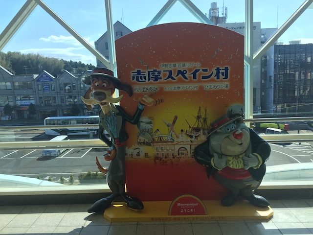
Get off at the Ugata station, and look who's here to greet us. =)
Welcome to Shima, Japan! What the f*ck are you Americans doing here!? This isn't a big town for tourists!
Hmm. What's strange about the bus from the Ugata station to Parque Espana. OK. I have to admit. I adjusted to Japan driving on the left side of the road much easier than I anticipated. You just sort of automataically adjust when you're crossing the road. I know that it's mainly just the UK, its former colonies (Gee. I wonder what Australia, South Africa, India, and Pakistan have in common), and for some reason, Japan. But yeah. It's more weird looking back at it than actually being there!
YAY!!! WE MADE IT TO PARQUE ESPANA!!!
Apparently, we need a memorial on the ground here to commerate that we love sports (Am I the only person on the planet who doesn't give a f*ck!?).
Quick warning for those wanting to do Parque Espana. This is NOT a cheap theme park. Between admission and the train here, expect to pay around $100. 4th most expensive park of the trip (#1. Tokyo Disney Resort #2. Fuji-Q #3. Universal Studios Japan)
The Japanese sure do love their covered Main Street entrances.
LA LA LA LA LA LA LA LA HALLOWEEN IS PARTY!!!
OK. We have to talk about the theming of Parque Espana. So yeah. This is a theme park in Japan, that is completely themed to Spain. And yeah. The theming at Parque Espana is f*cking amazing. Seriously, it's up there as one of the best themed parks (excluding Disney, Universal, & Europa Park). Seriously, it's really good. And for dressing the park up like Spain, from my visit there, they did a good job.
Parque Espana has probably been one of the parks in Japan that fascinated me the most from other peoples Photo TRs. So I'm super happy to be here.
 OK. While the amazing theming and quirky touches helped, this is a huge reason that Parque Espana has captivated my interest since I first discovered this place from the internet.
OK. While the amazing theming and quirky touches helped, this is a huge reason that Parque Espana has captivated my interest since I first discovered this place from the internet.
Quick random question. Why does Pyrenees have those chest things on the restraints? I don't get the purpose of them. They seemed a little weird. Oh well. Doesn't effect the ride. Speaking of which...
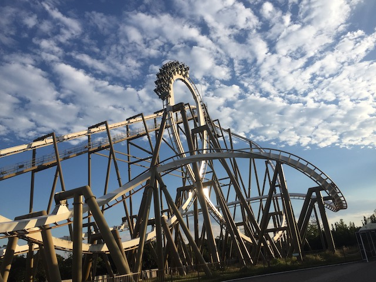
HOLY SH*T!!! PYRENEES IS AMAZING!!! I know it looks really good. But...DAMN!!!
 I know I generally describe rides as combinations of other rides. In which case, Pyrenees seems to be the best of the Batman the Ride clones, Raptor, & Katun all rolled into one. But really, Pyrenees is just its own amazing ride. Calling it that doesn't do this ride justice.
I know I generally describe rides as combinations of other rides. In which case, Pyrenees seems to be the best of the Batman the Ride clones, Raptor, & Katun all rolled into one. But really, Pyrenees is just its own amazing ride. Calling it that doesn't do this ride justice.
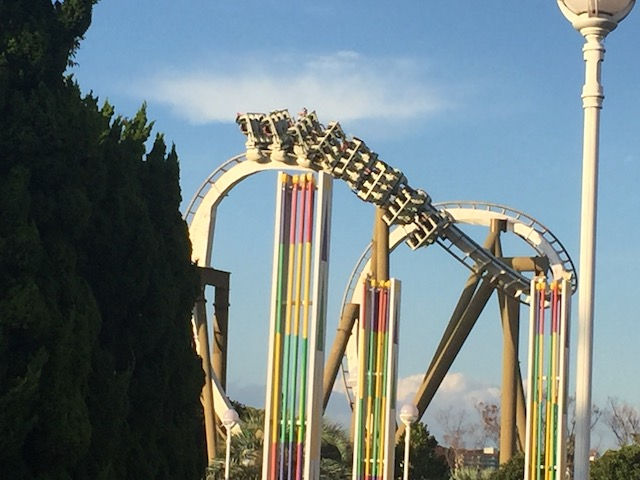
Seriously, this cobra roll has got some Kumba-like whip to it. One of the best cobra rolls B&M has ever built.
 So yeah. Everything about Pyrenees is amazing. The first drop is super fast and all the inversions are very forceful, with both the Zero G Roll and the cobra roll being very snappy. But all that was to be expected. What I did not expect was just how much I loved this drop off the midcourse brakes. If you look closely at it, you can see that it slightly turns before dropping down to the ground. And because the midcourse brakes act far more like a trim brake in some straight track, you glide through them, and you just expect to drop down. But that slight turn catches you off guard. Gives you some nice laterals, and then the drop gives a nice pop of airtime and more speed. This midcourse brake drop is amazing and so is this ride! =D
So yeah. Everything about Pyrenees is amazing. The first drop is super fast and all the inversions are very forceful, with both the Zero G Roll and the cobra roll being very snappy. But all that was to be expected. What I did not expect was just how much I loved this drop off the midcourse brakes. If you look closely at it, you can see that it slightly turns before dropping down to the ground. And because the midcourse brakes act far more like a trim brake in some straight track, you glide through them, and you just expect to drop down. But that slight turn catches you off guard. Gives you some nice laterals, and then the drop gives a nice pop of airtime and more speed. This midcourse brake drop is amazing and so is this ride! =D
 And of course, keeping with the theme of this ride, the corkscrews are really forceful and snappy. I love Pyrenees.
And of course, keeping with the theme of this ride, the corkscrews are really forceful and snappy. I love Pyrenees.
I really want to check out the rest of the park, but aside from a muffin at the Namba station, I haven't eaten all day. Gotta get some food.
Yeah. You can get standard theme park food here, but they also have some interesting food choices here, such as...
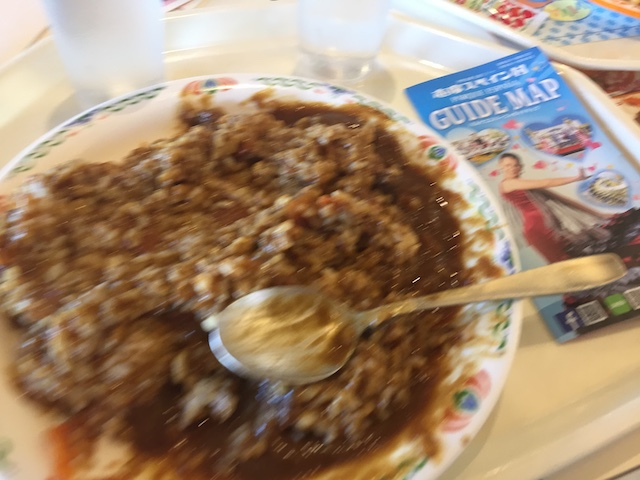
CURRY!!! Japanese Curry is so good! Curry Curry Curry Curry Curry Curry Curry Curry Curry!!!
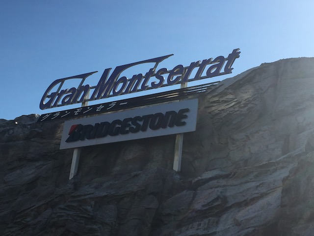
OK. So yeah. Parque Espana does in fact, have other coasters. And yeah. Let's check those out.
 With cars like that, I'm not expecting too much.
With cars like that, I'm not expecting too much.
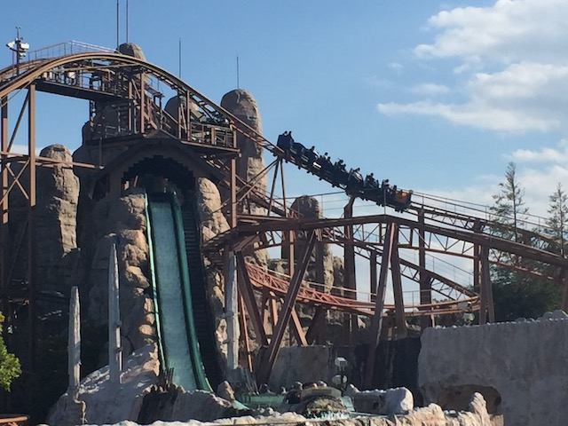
DAMN!!! I know this thing is just a mine train, but DAMN!!! It's actually really good. One of my favorite mine trains.
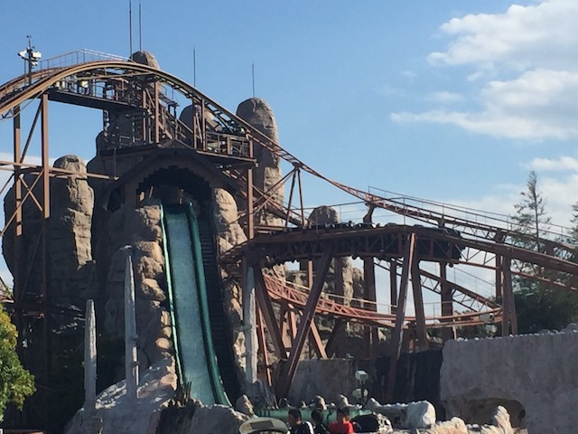
This coaster seriously has some powerful helixes. Don't underestimate this coaster! It's really freaking good!
And hey. The mine train winds all around a log flume. And I've been impressed with everything so far. Let's see if this thing is any good.
Meh. It's not a bad log flume. Better than your average log flume, and it does look nice. But after being so impressed with everything so far, not bad is not that impressive.
OK. So I know there's a weird indoor coaster here somewhere. But I don't know where. So let's just ride random indoor rides until we find it.
So no. This is not that. Rather, we stumbled upon the parks shooting dark ride. And...man is it weird. Technically not good as you just go in a circle, and you just shoot at things. So...OK I guess. I'm not sure what to make of this ride lol!
 I'm not sure if this is supposed to be a good score or if this is a terrible score. =/
I'm not sure if this is supposed to be a good score or if this is a terrible score. =/
 *Sigh* Yes. We are both credit whores.
*Sigh* Yes. We are both credit whores.
 OK. Even by kiddy coaster standards, this was a weird kiddy coaster. One of the lamest designs, but for some reason, the cars were big and it didn't feel cramped.
OK. Even by kiddy coaster standards, this was a weird kiddy coaster. One of the lamest designs, but for some reason, the cars were big and it didn't feel cramped.
 Hey Pyrenees! How's it going!?
Hey Pyrenees! How's it going!?
Just in case you forgot about Parque Espana's cool line-up of characters.
So Ice Castles are a very popular thing at Japanese parks. And in the summers, yeah. I can totally see why you'd want to check them out. But in October....this probably isn't a good idea.
Hey. This Ice Castle was actually really cool. I mean, it had sunflowers in the ice!
Speaking of ice, look what our next ride is!
Yeah. Considering that tomorrow is Halloween, this is NOT a good time to be riding this ride. But anyways, let's just judge this for how it works as a Christmas ride.
"Hey boys and girls! Know what you want for Christmas? Well write your wish list, and then give them to me! Parque Espana Frog! I'll be sure to pass them onto Santa!"
Gee. Even the rides that have a rodent infestation are pleasant over here! Only in Japan!
Oh Christmas Tree! Oh Christmas Tree! How lovely are thy peppermint wheels!
 While I will admit that I was not in the mood for this since...yeah. Those who know me know that out of season Christmas decorations are a pet peeve of mine. But if it was December, I would give this ride a thumbs up.
While I will admit that I was not in the mood for this since...yeah. Those who know me know that out of season Christmas decorations are a pet peeve of mine. But if it was December, I would give this ride a thumbs up.
Um...guys. The Colloseum is in Rome, which is in Italy. Not fitting for a park that's trying to be Spain. ;)
Come on! This is supposed to be the Colloseum! I wanna see a gladiator battle between all the Parque Espana animals! Feed one of these bastards to the lions!
Just a quick reminder. We are not in Spain. Or any Latin American country previously owned by Spain. No, we're in Japan.
You know, there's a lot of old historical artifacts in my hometown leftover from when they were Spanish Colonies, and afterwards, part of Mexico, before becoming part of America. And there's A LOT of stuff in my hometown that looks A LOT like that.
Being a mannequin is no excuse for looking like an ass. Put on these fancy clothes and show some class.
Hmm. I wonder what that could be.
 It's a pirate ship! There's just a pirate ship down in the lower level of Parque Espana! I know there apparently used to be a Pirates of the Carribean knock off here. But that's gone. But...I'm not sure if there's another attraction in the ship. I mean...there's a sign out front. But I'm not sure what for.
It's a pirate ship! There's just a pirate ship down in the lower level of Parque Espana! I know there apparently used to be a Pirates of the Carribean knock off here. But that's gone. But...I'm not sure if there's another attraction in the ship. I mean...there's a sign out front. But I'm not sure what for.
Oh no!! The Peter Pan knock off is closed today!! Well, actually, it only looks like Peter Pan. In reality, this is a dark ride based off Don Quixote, which after doing some googling, is actually a famous historical peice of Spanish literature, and I think all the Parque Espana characters are actually from the book, only they're anthropomorphic animals. So...it's Don Quixote, as presented by furries. Hey. Fine with me. =)
 All right. So ever since reading about other trip reports from here, I've always been intrigued by this particular escelator. And...this may possibly be the only escelator on the planet that I was actually looking foreward to seeing and riding. And hey. It's got a really pretty light show along with some classic Spanish music. And it just shows that this park goes above and beyond in theming that they go to this much trouble for the freaking escelator connecting the lower half of the park to the upper half. Gee. I wish other parks could put this much effort into their escelators *cough* Universal Studios Hollywood *cough*.
All right. So ever since reading about other trip reports from here, I've always been intrigued by this particular escelator. And...this may possibly be the only escelator on the planet that I was actually looking foreward to seeing and riding. And hey. It's got a really pretty light show along with some classic Spanish music. And it just shows that this park goes above and beyond in theming that they go to this much trouble for the freaking escelator connecting the lower half of the park to the upper half. Gee. I wish other parks could put this much effort into their escelators *cough* Universal Studios Hollywood *cough*.
"When do we get to the ride?" "This is the ride! YIPEE!!!"
"Come on dude! You're the Parque Espana bull! You've got your own coaster here! Show more excitement!"
Oh crap! The Bullfight Coaster! So yeah! We were looking for that coaster and couldn't find it, but found a bunch of other cool stuff. After looking around the entire park, we couldn't find it. We were dumbfounded. Eventually, we found it. We walked right past it when we entered the park. DUR!!! WE DONE F*CKED UP!!!
Oh wait! This isn't the Bullfight Coaster anymore! It's now Steampunk: Iron Bull.
So Steampunk: Iron Bull is a strange coaster. A VERY strange coaster. It's basically a Whirlwind. If it was indoors. And had OTSRs. And have a really funky light package and was themed to an Iron Bull chasing you. Yeah. This coaster is very strange. It's technically a bad ride as...yeah. It's slow, it's awkward, and if you're not careful, you could get some headbanging. But damn it! This coaster is just so weird that I can't help but enjoy it on a sheer "WHAT THE F*CK!!?" level.
"Hey look! I'm hanging out with Parque Espana Frog! What's up dude!"
"Hey look! A westerner! I have no idea why he's here of all places, but I'll gladly take his yen!"
Can someone explain to me the purpose of these stairs to nowhere? I seriously don't get the purpose of them. There's literally nothing up there.
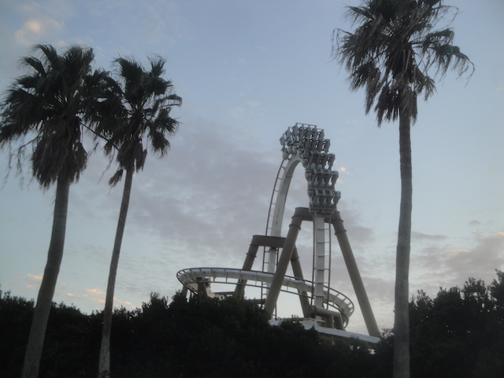
I love the rest of Parque Espana, but with a coaster this good here, the coaster enthusiast is screaming "STOP GIVING A SH*T ABOUT THEMING, DARK RIDES, AND THE ACTUAL THEME PARK! ONE OF B&Ms BEST COASTERS IS RIGHT THERE WITH NO LINE!!! MARATHON IT YOU DUMBASS!!!", and yeah. We had ourselves a nice Pyrenees marathon.
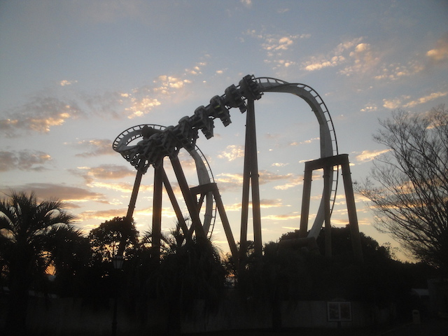
I meant what I said in the last caption. Pyrenees is not only unquestionably my favorite B&M Invert (Better than both Montu & Katun), but it's just flat out of my favorite coasters that they ever built, as well as my favorite B&M in Japan (Sorry Flying Dinosaur).
 For instance, I haven't talked about the helix in the middle of the rides 2nd loop. Cause HOLY SH*T!!! SO FORCEFUL!!! This thing damn near feels like a Goliath Helix.
For instance, I haven't talked about the helix in the middle of the rides 2nd loop. Cause HOLY SH*T!!! SO FORCEFUL!!! This thing damn near feels like a Goliath Helix.
"I CAN'T BELIEVE I ALMOST SKIPPED PARQUE ESPANA AND ONLY PUT IT IN MY JAPAN ITENERARY AT THE VERY LAST MINUTE AFTER LEARNING YOU WERE DOING IT ON YOUR INCREDIBLECOASTERS JAPAN TRIP!!!"
(You're welcome)
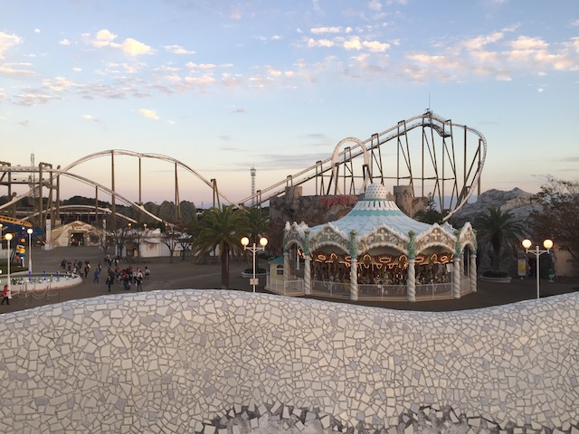
Sadly, it's time to go. Bye Parque Espana. I'll miss all your great theming as well as your amazing B&M Invert.
Hasta La Vista Parque Espana.
Parque Espana needs more advertising. And not just in Shima. This park is f*cking amazing.
 All right. So this is a popular Japanese drink called Calpis. It's sort of...some would call this Milk Soda. So when I first heard this, my disgust factor kicked in as...I hate milk. Tastes disgusting. So when I hear Milk Soda, I just think *BLUGH*. But...I took a sip of it, and shockingly, I did not hate it. It's very creamy, but it didn't taste like milk. Just...extra creamy cream soda. But to be fair, I only had one sip of this. I never actually bought one for myself. But hey. That's not a problem, since...amazingly, this is one of the few Japanese drinks that you can actually get in America. OK, it's not super common or popular. But if you go into a Japan Store in L.A, they'll sell Ramune (I know I talked about Ramune in past updates, but shockingly, despite being the most popular Japanese soda in America, I never saw a single Ramune in all of Japan. Bummer, as it's pretty good) and Calpis. So I could get one next time I venture out to an Orange County Mall. Eh...appreciated, but I wish those stores carried Pocari Sweat. Or even better...
All right. So this is a popular Japanese drink called Calpis. It's sort of...some would call this Milk Soda. So when I first heard this, my disgust factor kicked in as...I hate milk. Tastes disgusting. So when I hear Milk Soda, I just think *BLUGH*. But...I took a sip of it, and shockingly, I did not hate it. It's very creamy, but it didn't taste like milk. Just...extra creamy cream soda. But to be fair, I only had one sip of this. I never actually bought one for myself. But hey. That's not a problem, since...amazingly, this is one of the few Japanese drinks that you can actually get in America. OK, it's not super common or popular. But if you go into a Japan Store in L.A, they'll sell Ramune (I know I talked about Ramune in past updates, but shockingly, despite being the most popular Japanese soda in America, I never saw a single Ramune in all of Japan. Bummer, as it's pretty good) and Calpis. So I could get one next time I venture out to an Orange County Mall. Eh...appreciated, but I wish those stores carried Pocari Sweat. Or even better...
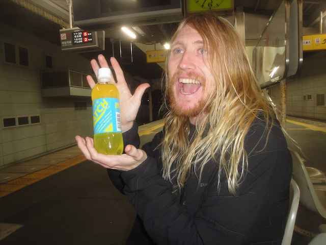
Match. OK. Remember when I mentioned in the Osaka update that I was going to talk about two other drinks later on? Yeah. Pocari Sweat was Drink #1. And this is Drink #2. Match. Unlike Pocari Sweat, which is popular with people who do Japan, and gets mentioned a lot in trip reports. I never knew that Match existed until I was in Japan. I just saw it in the vending machine, and decided to give it a try to be adventerous and try new drinks from the Japanese vending machines (which are amazing). And, I absolutely fell in love with this drink. Some of you know that I REALLY like Mountain Dew as one of my favorite sodas. And I'm not gonna lie. That's what inspired me to try Match. And...this is MUCH better than Mountain Dew. This is Mountain Dew, with the energy and kick of a Monster, and honestly, a sort of Gatorade-like taste to it as well. It's just REALLY good (And apparently, Match is most well known for being the healthiest soda? Nice unexpected upside to one of my favorite sodas). I only regret never trying the Berry Match. I saw it in one vending machine, figured I'd try it later, but then never found it again. Oh well. I consumed A LOT of Match on this trip. Highly recommended if you ever come out to Japan.
Get comfy Logan. We've got a 2.5 hour train ride back to Osaka.
I know this isn't the first time I talked about cigarette vending machines. And though I have no interst in ever using one since I don't smoke (at least not tobacco), but it is still cool that you can get nearly anything from a vending machine.
Just strolling down the streets of Osaka.
I know I had McDonalds last night, and I try to do more local unique stuff on international trips (and even on domestic trips in different states). But...Logan had never tried Japanese McDonalds. And...IT'S SO GOOD!! THE GRAN GARLIC PEPPER BURGER IS SO GOOD!!! Plus, at Japanese McDonalds, you can substitute fries for chicken nuggets for your combo. I'd say bring this to America, but knowing most Americans, they wouldn't substitute fries with chicken nuggets. They'd just get both with their burger. =P Now I really want Japanese McDonalds. Tempted to swing by my local McDonalds, but I'd just be dissapointed if I did. Call me when you get the Gran Garlic Pepper Burger.
Welcome to our bar! Come inside, have a couple beers, and throw darts at our local cat (And now I've pissed off my cat-lover friends LOL)! =P
Nagashima Spaland
Home
|